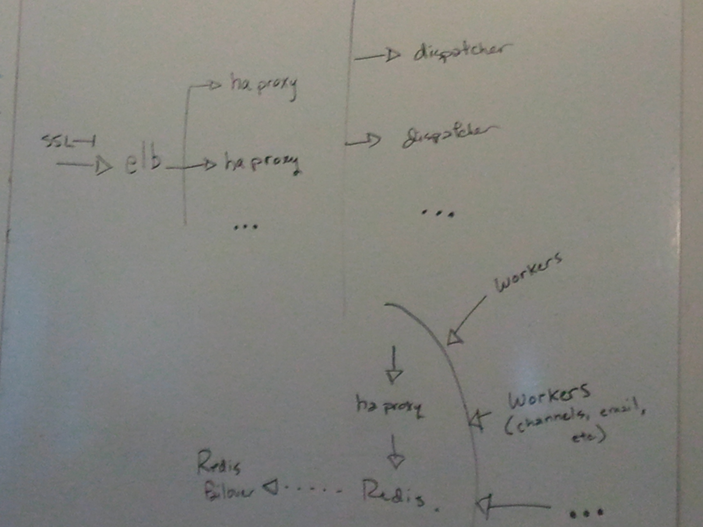

Sorry this won't look right without browser support.
This works with stable Chrome Firefox and Safari
testing sucks
load
just as critical as unit and functional tests
should be run alongside unit tests
the world is bigger than localhost
there are plenty of tools
some test one resource/uri
examples: ab, siege, beeswithmachineguns
Image placeholder
success, errors
drive it via cli
doesn't model user behavior
some test some list of resources
examples: httperf/autobench
Image placeholder
standard deviation
connections versus requests versus latency
bound by the testing machine
distribute it
examples: autoperf, autobench,
plain old ssh loops + regex
Image placeholder
add a gui and functional tests
examples: funkload tsung jmeter
load testing as a service
examples: blitz.io
Image placeholder
Image placeholder
users/box
$/user
happy face
we've made AWS AMIs available
with all of these tools and more
tcp_max_syn_backlog ip_local_port_range
AWS will fuck you
saturday vs weekday traffic
imge place holder
c1.xlarge (high I/O)
VM competing for the NIC(s)
Someone else's network
"bad neighborhood"
"noisey neighbors"
"Each instance can access as much bandwidth as is available at the time"
we traded all this for the convenience of the cloud
c1.xlarge
tested within the same region
The Internet will fuck you
we know boxes degrade
already monitoring
regular performance tests
measuring user activity
reboot 3 times
we're getting fucked
modeling user behavior
mining your logs
scriptability
you need a great http client
error handling
low-level control
evented i/o
node.js
solid http core library
Shred - REST-friendly wrapper
scriptable scenarios
distributedly
dolphin - pods with an overlord
a word about our architecture

LIVE DEMO
go
here to see screenshots
go
here to continue
- www.spire.io
- github.com/spire-io
- @spireio